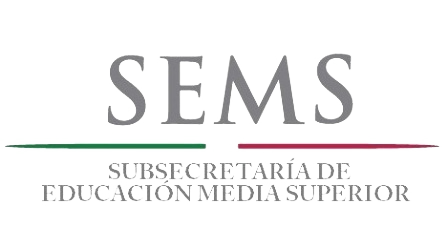
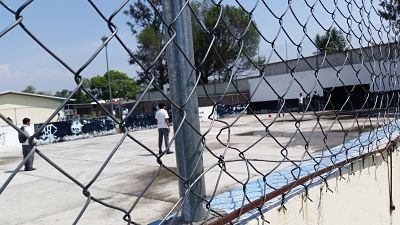
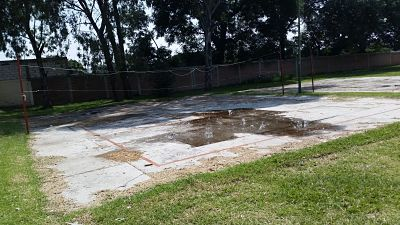
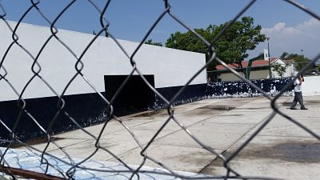
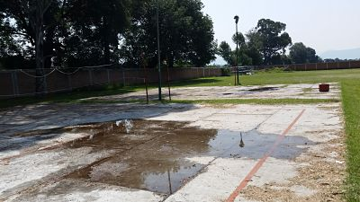
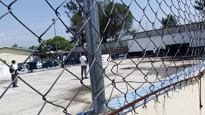
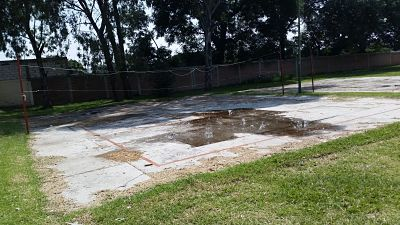
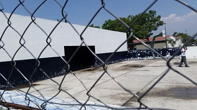
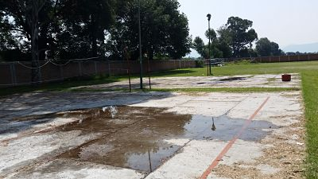

CBTis 16
¿Que es la DGETI?
¿Que es la DGETI?
 La Dirección General de Educación Tecnológica Industrial es una dependencia adscrita a la Subsecretaría de Educación Media Superior (SEMS), dependiente de la Secretaría de Educación Pública que ofrece el servicio educativo del nivel medio superior tecnológico. El 16 de Abril de 1971 es publicado en el Diario Oficial de la Federación el acuerdo presidencial por el que se modifica la estructura orgánica administrativa de la SEP y se da paso a la creación de la DGETI, en agosto de ese mismo año se publican las funciones que tendrá esta institución y se integran a ella los centros de capacitación para el trabajo industrial, escuelas tecnológicas industriales, los centros de estudios tecnológicos en el Distrito Federal y los centros de estudios tecnológicos foráneos.
Actualmente la DGETI es la institución de educación media superior tecnológica más grande del país, con una infraestructura física de 442 planteles educativos a nivel nacional, de los cuales 168 son CETIS y 274 CBTIS; ha promovido además la creación de al menos 288 CECyTEs, mismos que operan bajo un sistema descentralizado. Tiene por objetivo formar bachilleres técnicos y técnicos profesionales que desarrollen, fortalezcan y preserven una cultura tecnológica y una infraestructura industrial y de servicios que coadyuven a satisfacer las necesidades económicas y sociales del país. Misión Formar ciudadanos con las habilidades, conocimientos y actitudes requeridas para propiciar y participar en una sociedad del conocimiento, tanto en el ámbito laboral como social. Lo anterior en un contexto de equidad, flexibilidad, integralidad y apertura, que coadyuve a satisfacer las necesidades sociales y económicas del país. Visión Ser una institución que proporcione formación integral y pertinente de acuerdo a las exigencias derivadas de la competitividad mundial, del entorno y vocación local, además de tener la flexibilidad para satisfacer los intereses, aspiraciones y posibilidades de la población que demanda este nivel educativo en nuestros diferentes planteles.
La Dirección General de Educación Tecnológica Industrial es una dependencia adscrita a la Subsecretaría de Educación Media Superior (SEMS), dependiente de la Secretaría de Educación Pública que ofrece el servicio educativo del nivel medio superior tecnológico. El 16 de Abril de 1971 es publicado en el Diario Oficial de la Federación el acuerdo presidencial por el que se modifica la estructura orgánica administrativa de la SEP y se da paso a la creación de la DGETI, en agosto de ese mismo año se publican las funciones que tendrá esta institución y se integran a ella los centros de capacitación para el trabajo industrial, escuelas tecnológicas industriales, los centros de estudios tecnológicos en el Distrito Federal y los centros de estudios tecnológicos foráneos.
Actualmente la DGETI es la institución de educación media superior tecnológica más grande del país, con una infraestructura física de 442 planteles educativos a nivel nacional, de los cuales 168 son CETIS y 274 CBTIS; ha promovido además la creación de al menos 288 CECyTEs, mismos que operan bajo un sistema descentralizado. Tiene por objetivo formar bachilleres técnicos y técnicos profesionales que desarrollen, fortalezcan y preserven una cultura tecnológica y una infraestructura industrial y de servicios que coadyuven a satisfacer las necesidades económicas y sociales del país. Misión Formar ciudadanos con las habilidades, conocimientos y actitudes requeridas para propiciar y participar en una sociedad del conocimiento, tanto en el ámbito laboral como social. Lo anterior en un contexto de equidad, flexibilidad, integralidad y apertura, que coadyuve a satisfacer las necesidades sociales y económicas del país. Visión Ser una institución que proporcione formación integral y pertinente de acuerdo a las exigencias derivadas de la competitividad mundial, del entorno y vocación local, además de tener la flexibilidad para satisfacer los intereses, aspiraciones y posibilidades de la población que demanda este nivel educativo en nuestros diferentes planteles.
Oportunidades de Insercion Laboral
- Desarrolladores de software
- Analistas de sistemas
- Analista de programas de cómputo
- Edición de software y edición de software integrada con la reproducción
- Escuelas de computación del sector privado
- Servicios de diseño de sistemas de cómputo y servicios relacionados
- Escuelas de computación del sector público
Contacto:
Director: Ramos Bravo Anselmo
CCT: 21DCT0046P
Tel.: (244) 4462940
Dirección: Fracc. Ricardo Flores Magon Domicilio Conocido S/N. Atlixco, Puebla. CP 74240
Correo Electrónico: cbtis016.dir@dgeti.sems.gob.mx



 






